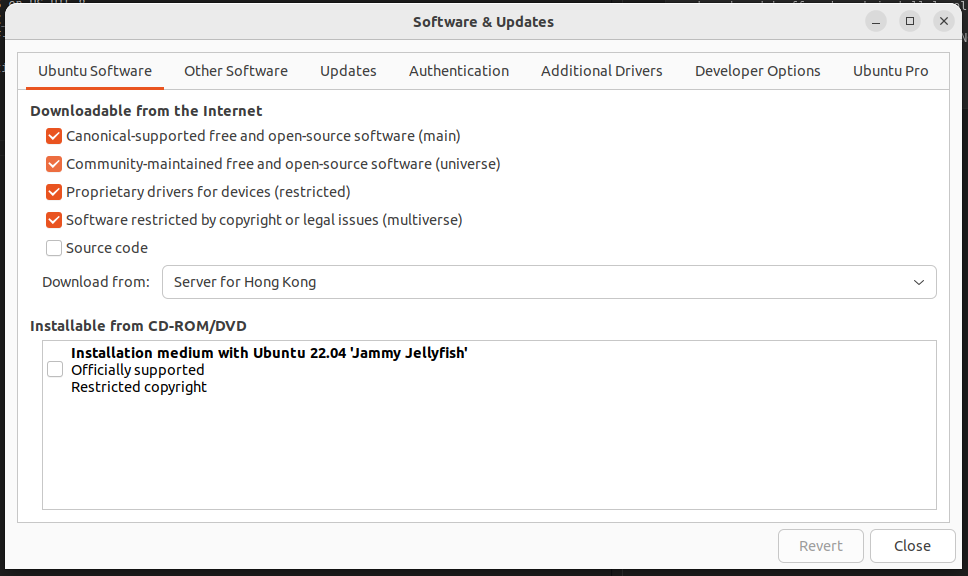

Download ROS 2 Humble¶
Set Locale¶
locale # check for UTF-8
sudo apt update && sudo apt install locales
sudo locale-gen en_US en_US.UTF-8
sudo update-locale LC_ALL=en_US.UTF-8 LANG=en_US.UTF-8
export LANG=en_US.UTF-8
locale # verify settings
Setup Sources¶
First ensure that the Ubuntu Universe repository is enabled.

Now add the ROS 2 GPG key with apt.
sudo apt update && sudo apt install curl -y
sudo curl -sSL https://raw.githubusercontent.com/ros/rosdistro/master/ros.key -o /usr/share/keyrings/ros-archive-keyring.gpg
Then add the repository to your sources list.
echo "deb [arch=$(dpkg --print-architecture) signed-by=/usr/share/keyrings/ros-archive-keyring.gpg] http://packages.ros.org/ros2/ubuntu $(. /etc/os-release && echo $UBUNTU_CODENAME) main" | sudo tee /etc/apt/sources.list.d/ros2.list > /dev/null
Install ROS 2 packages¶
Update your apt repository caches after setting up the repositories.
Desktop Install (Recommended): ROS, RViz, demos, tutorials.
Development tools: Compilers and other tools to build ROS packages
Environment setup¶
Sourcing the setup script¶
Set up your environment by sourcing the following file.
Try some examples¶
Talker-listener¶
If you installed ros-humble-desktop above you can try some examples.
In one terminal, source the setup file and then run a C++ talker:
In another terminal source the setup file and then run a Python listener:
You should see the talker saying that it’s Publishing messages and the listener saying I heard those messages. This verifies both the C++ and Python APIs are working properly. Hooray!
Next Step¶
Please navigate to CLI Tools Document